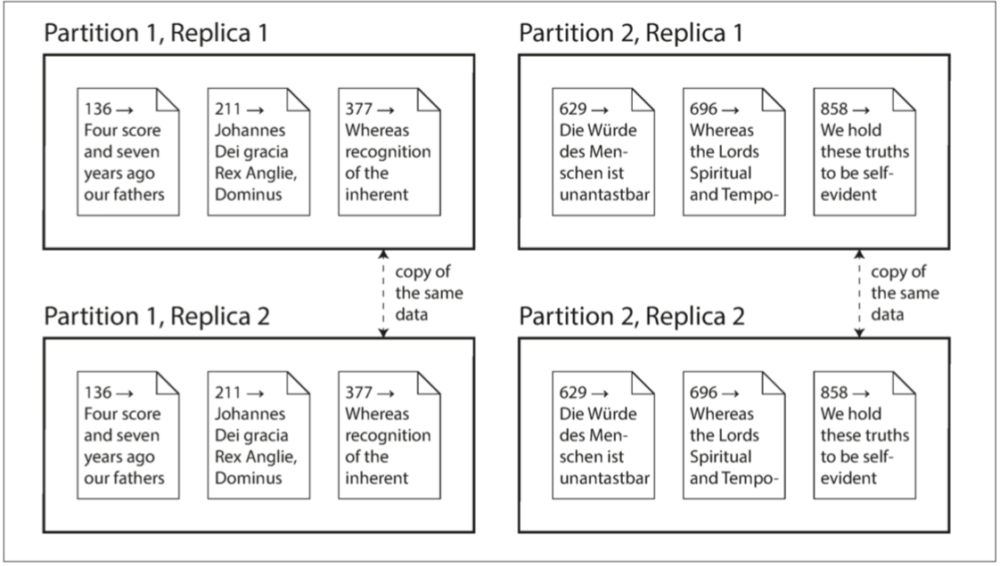

第二部分： 分布式数据
一个成功的技术，现实的优先级必须高于公关，你可以糊弄别人，但糊弄不了自然规律。
——罗杰斯委员会报告（1986）
在本书的第一部分中，我们讨论了数据系统的各个方面，但仅限于数据存储在单台机器上的情况。现在我们到了第二部分，进入更高的层次，并提出一个问题：如果多台机器参与数据的存储和检索，会发生什么？
你可能会出于各种各样的原因，希望将数据库分布到多台机器上：
可伸缩性
如果你的数据量、读取负载、写入负载超出单台机器的处理能力，可以将负载分散到多台计算机上。
容错/高可用性
如果你的应用需要在单台机器（或多台机器，网络或整个数据中心）出现故障的情况下仍然能继续工作，则可使用多台机器，以提供冗余。一台故障时，另一台可以接管。
延迟
如果在世界各地都有用户，你也许会考虑在全球范围部署多个服务器，从而每个用户可以从地理上最近的数据中心获取服务，避免了等待网络数据包穿越半个世界。
伸缩至更高的载荷
如果你需要的只是伸缩至更高的载荷（load），最简单的方法就是购买更强大的机器（有时称为垂直伸缩（vertical scaling）或向上伸缩（scale up））。许多处理器，内存和磁盘可以在同一个操作系统下相互连接，快速的相互连接允许任意处理器访问内存或磁盘的任意部分。在这种 共享内存架构（shared-memory architecture） 中，所有的组件都可以看作一台单独的机器。
i. 在大型机中，尽管任意处理器都可以访问内存的任意部分，但总有一些内存区域与一些处理器更接近（称为非均匀内存访问（nonuniform memory access, NUMA）【1】）。 为了有效利用这种架构特性，需要对处理进行细分，以便每个处理器主要访问临近的内存，这意味着即使表面上看起来只有一台机器在运行，分区（partitioning）仍然是必要的。 ↩
共享内存方法的问题在于，成本增长速度快于线性增长：一台有着双倍处理器数量，双倍内存大小，双倍磁盘容量的机器，通常成本会远远超过原来的两倍。而且可能因为存在瓶颈，并不足以处理双倍的载荷。
共享内存架构可以提供有限的容错能力，高端机器可以使用热插拔的组件（不关机更换磁盘，内存模块，甚至处理器）——但它必然囿于单个地理位置的桎梏。
另一种方法是共享磁盘架构（shared-disk architecture），它使用多台具有独立处理器和内存的机器，但将数据存储在机器之间共享的磁盘阵列上，这些磁盘通过快速网络连接ii。这种架构用于某些数据仓库，但竞争和锁定的开销限制了共享磁盘方法的可伸缩性【2】。
ii. 网络附属存储（Network Attached Storage, NAS），或存储区网络（Storage Area Network, SAN） ↩
无共享架构
相比之下，无共享架构（shared-nothing architecture）（有时称为水平伸缩（horizontal scale） 或向外伸缩（scale out））已经相当普及。在这种架构中，运行数据库软件的每台机器/虚拟机都称为节点（node）。每个节点只使用各自的处理器，内存和磁盘。节点之间的任何协调，都是在软件层面使用传统网络实现的。
无共享系统不需要使用特殊的硬件，所以你可以用任意机器——比如性价比最好的机器。你也许可以跨多个地理区域分布数据从而减少用户延迟，或者在损失一整个数据中心的情况下幸免于难。随着云端虚拟机部署的出现，即使是小公司，现在无需Google级别的运维，也可以实现异地分布式架构。
在这一部分里，我们将重点放在无共享架构上。它不见得是所有场景的最佳选择，但它是最需要你谨慎从事的架构。如果你的数据分布在多个节点上，你需要意识到这样一个分布式系统中约束和权衡 ——数据库并不能魔术般地把这些东西隐藏起来。
虽然分布式无共享架构有许多优点，但它通常也会给应用带来额外的复杂度，有时也会限制你可用数据模型的表达力。在某些情况下，一个简单的单线程程序可以比一个拥有超过100个CPU核的集群表现得更好【4】。另一方面，无共享系统可以非常强大。接下来的几章，将详细讨论分布式数据会带来的问题。
复制 vs 分区
数据分布在多个节点上有两种常见的方式：
复制（Replication）
在几个不同的节点上保存数据的相同副本，可能放在不同的位置。 复制提供了冗余：如果一些节点不可用，剩余的节点仍然可以提供数据服务。 复制也有助于改善性能。 第五章将讨论复制。
分区 (Partitioning)
将一个大型数据库拆分成较小的子集（称为分区（partitions）），从而不同的分区可以指派给不同的节点（node）（亦称分片（shard））。 第六章将讨论分区。
复制和分区是不同的机制，但它们经常同时使用。如图II-1所示。
{kind=link}

图II-1 一个数据库切分为两个分区，每个分区都有两个副本
理解了这些概念，就可以开始讨论在分布式系统中需要做出的困难抉择。第七章将讨论事务(Transaction)，这对于了解数据系统中可能出现的各种问题，以及我们可以做些什么很有帮助。第八章和第九章将讨论分布式系统的根本局限性。
在本书的第三部分中，将讨论如何将多个（可能是分布式的）数据存储集成为一个更大的系统，以满足复杂的应用需求。 但首先，我们来聊聊分布式的数据。
索引
参考文献
Ulrich Drepper: “What Every Programmer Should Know About Memory,” akka‐dia.org, November 21, 2007.
Ben Stopford: “Shared Nothing vs. Shared Disk Architectures: An Independent View,” benstopford.com, November 24, 2009.
- Michael Stonebraker: “The Case for Shared Nothing,” IEEE Database EngineeringBulletin, volume 9, number 1, pages 4–9, March 1986.
- Frank McSherry, Michael Isard, and Derek G. Murray: “Scalability! But at What COST?,” at 15th USENIX Workshop on Hot Topics in Operating Systems (HotOS),May 2015.
| 上一章 | 目录 | 下一章 |
|---|---|---|
| 第四章：编码与演化 | 设计数据密集型应用 | 第五章：复制 |